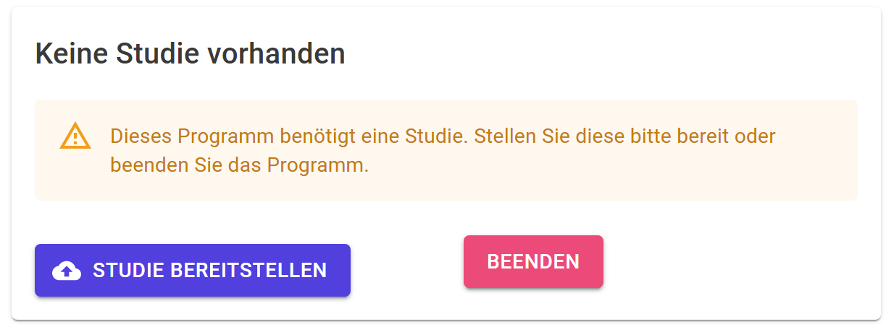
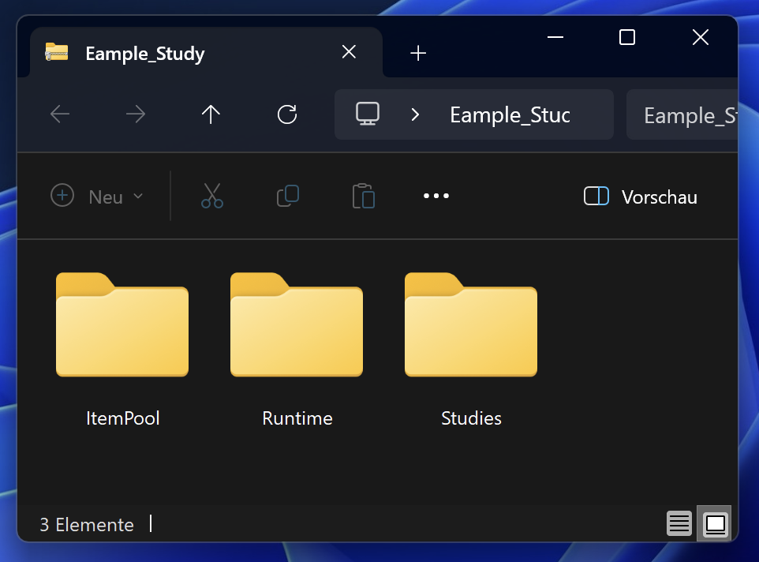
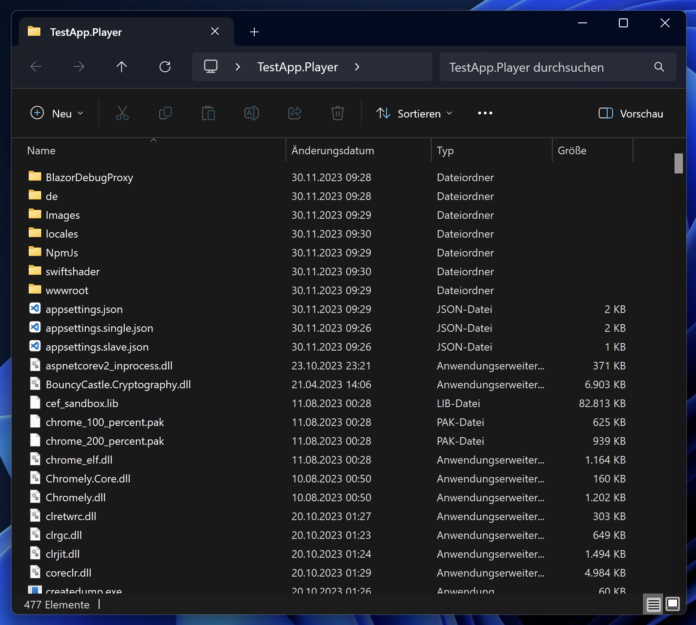
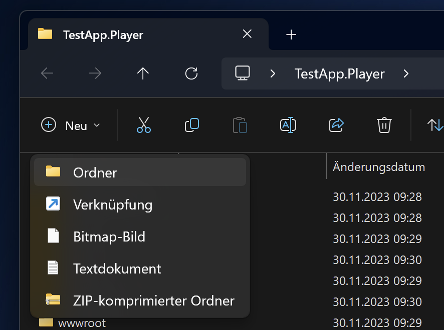
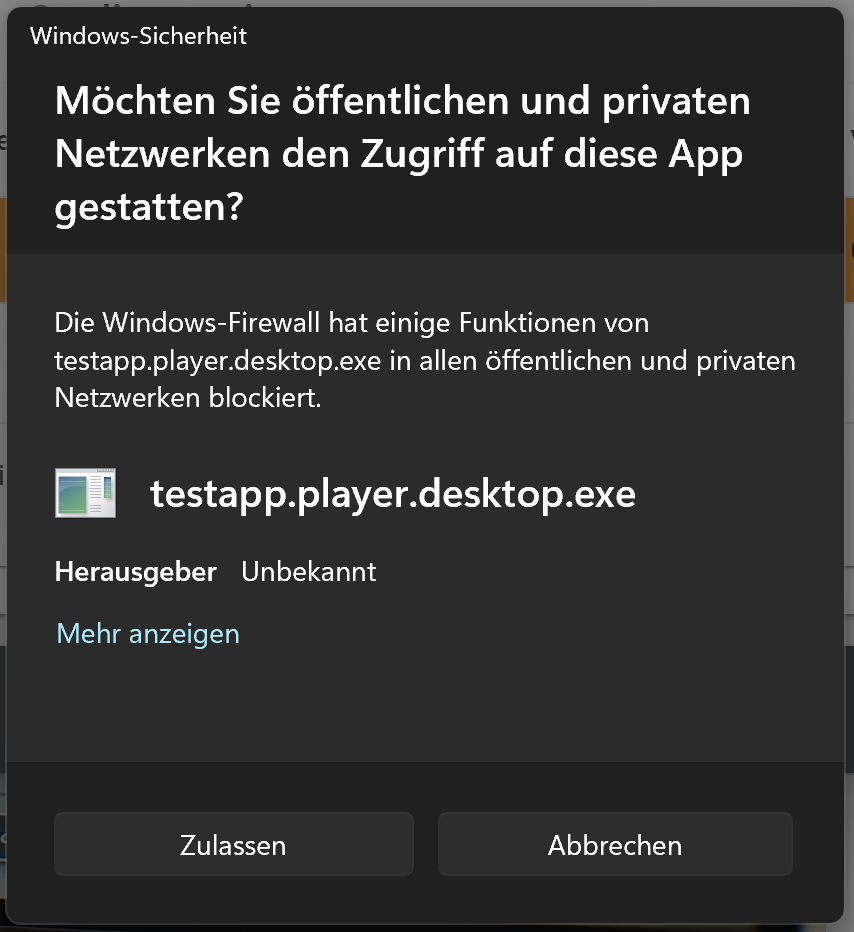

8 Datenerhebung: In IRTlib Player Importieren / Data Collection: Import into IRTlib Player
8.1 Konfiguration Importieren
Im folgenden ist beschrieben, wie eine mit einem IRTlib Editor erstellte Studienkonfiguration, die als ZIP-Archiv vorliegt, verwendet werden kann.
Für die Datenerhebung mit einem IRTlib Player ist eine veröffentlichte Version einer Studie notwendig.
Wenn eine versiegelte Studienkonfiguration aus dem IRTlib Editor exportiert wurde, kann diese in einen IRTlib Player integriert werden.
Zur Zeit werden zwei Optionen unterstützt:
- Automatischer Import aus ZIP-Archiv
- Manueller Import aus ZIP-Archiv
Der Automatische Import ist nur für die erste Studie in einem IRTlib Player möglich. Sollen mehrere Studien in einem IRTlib Player parallel verwendet werden, muss ein Manueller Import durchgeführt werden.
8.1.1 Automatischer Import
Für einen automatischen Import einer als ZIP-Archiv vorliegenden Studie in einem Offline IRTlib Player, kann der Player zunächst über die ausführbare Datei TestApp.Player.Desktop.exe gestartet werden.
Wurde dieser IRTlib Player noch nicht mit einer Studie konfiguriert (d.h. wurde der Player bspw. wie unter Download beschrieben direkt von dem Github-Repositoy heruntergeladen), dann erscheint folgender Dialog:

Durch Klicken der Schaltfläche Studie Bereitstellen kann das ZIP-Archiv direkt geöffnet werden. Es wird dann automatisch in den IRTlib Player eingefügt und kann über die im Abschnitt Login der Studie konfigurierte Weise verwendet werden.
8.1.2 Manueller Importieren
Wenn kein automatischer Import möglich oder gewollt ist, kann der Inhalt des ZIP-Archivs einer Studie auch manuell in das dafür vorgesehene Verzeichnis des IRTlib Players integriert werden.
Jede ZIP-Archiv mit einer Studienkonfiguration welches aus dem IRTlib Editor exportiert wurde, enthält drei Verzeichnisse. Die ZIP-Archive lassen {StudyName.zip} sich z.B. mit dem Windows Explorer öffnen:

Um die Studie in eien IRTlib Player zu intgerieren, kann der Inhalt dieser drei Verzeichnisse nun z.B. in das Programmverzeichnis eines Offline IRTlib Players integriert werden.
| Schritt | Beschreibung |
|---|---|
| 1. | Player (TestApp.Player.zip) entpacken. Das kann bspw. über den Windows Explorer erfolgen: |
 |
|
| 2. | In das entpackte Verzeichnis navigieren: |
|  | |
| 3. | Erstellen Sie einen neuen Ordner Content innerhalb des Player-Ordners (d.h. TestApp.Player/Content/). Wenn bereits eine Studie konfiguriert ist, dann existiert der Ordner Content bereits. |
|  | |
| 4. | Kopieren Sie die drei Ordner ItemPool, Runtime und Studies aus der heruntergeladenen Studie {StudyName.zip} in den Content-Ordner des Players. |
 |
|
| 5. | Starten der Datei TestApp.Player.Desktop.exe |
| 6. | Wenn nötig akzeptieren Sie die folgende Warnung: |
|  |
Analog zu dem hier beschriebenen Vorgehen erfolgt auch der Import von Studien in einen Online IRTlib Player. Hierfür ist für die Vorbereitung Zugriff auf das im docker-compse.yml-File definierte Volume /app/Content notwendig.
8.2 Auslieferungen Konfigurieren
Die mit einem IRTlib Editor erstellten Studienkonfigurationen sind mit unterschiedlichen Varianten des IRTlib Players verwendbar.
Im Moment werden drei Varianten bereitgestellt:
- Desktop-Version (Windows)
- Lokale Server-Version (Windows)
- Online Version (Docker)
8.2.1 Desktop-Version (Windows)
Basale Konfigurationen des IRTlib Player (Darstellung in einem Festermodus vs. Vollbildmodus) sind Teil der Studienkonfiguration. Nur Studien mit gleichen Einstellungen bzgl. der Darstellung können in einem Offline IRTlib Player gleichzeitig verwendet werden. Mehrere Kopien eines Offline IRTlib Players auf einem Computer sind möglich.
Um den (Offline) IRTlib Player auf einem Computer zu starten, muss die Ausführbare Datei TestApp.Player.Desktop.exe gestartet werden.
Datenspeicherung: Die während einer Datenerhebung mit dem Offline IRTlib Player erhobenen Daten werden in einem Verzeichnis lokal gespeichert. Das Verzeichnis und der Dateiname für die Rohdatenspeicherung ist in der Studie konfiguriert und kann mit Hilfe von Startup-Parametern angepasst werden. Als Dateiname der Rohdatenarchive wird der Benutzername bzw. die erstellte UUID verwendet. Sollte in einem (Offline) IRTlib Player der Benutzername mehrfach verwendet werden, d.h. wenn beim Beenden des IRTlib Players bereits ein Rohdatenarchiv mit diesem Dateinamen existiert, wird dieses nicht überschrieben sondern es wird ein Suffix angehängt (z.B. PersonIdentifier_1.zip).
Startup-Parameter: Für die Integration des Offline IRTlib Players in programmierte Abläufe sind möglich. Anmeldedaten (Benutzername, Benutzername + Passwort, Token), die in einer Studie konfiguriert sind können als so-genannte Startup-Parameter übergeben werden. Diese Parameter werden dann an den Aufruf von TestApp.Player.Desktop.exe angehängt.
Beispiel:
TestApp.Player.Desktop.exe /RawDataFolder="..\\myDataFolder"
Gültige Startup-Parameter sind:
/AutoLoginCreateWithTest="{StudienName}": Fordert die Administration der Studie mit der Bezeichnung{StudienName}an./AutoLoginUserName="{PersonIdentifier}": Übergibt die Anmeldeinformation{PersonIdentifier}als Benutzername/MyBlocklyVariable="123": Übergibt den Wert123für die Blockly-VariableMyBlocklyVariable/MonitoringFile="..\\last-run.json": Pfad und Dateiname der so-genannten Monitoring-Datei./RawDataFolder="..\\myDataFolder": Pfad zu dem Verzeichnis, in welchem die Rohdatenarchive gespeichert werden.
Mehrere Startup-Parameter nacheinander sind möglich (getrennt durch Leerzeichen).
Prüfung von Voraussetzungen: Der IRTlib Player sollte auf Windows-Computer (aktuelle unterstützt ab Windows 10) ohne weitere Installation oder Laufzeitvoraussetzungen ausgeführt werden können. Spezielle Konfigurationen, Virenscanner usw. können die Ausführung aber unterbinden. Ein Tool zum Prüfen von Voraussetzungen kann bspw. aufbauend auf diesem Beisipiel (IRTlibReadiness) erstellt werden.
Die bereitgestellte Windows-Version des IRTlib Player ermöglicht einen einfachen Kiosk-Modus, der nur für Computer mit nur einem Bildschirm (z.B. Notebooks) vorgesehen ist. Für eine Prüfungssichere Kiosk-Lösung kann die Offline-Version des IRTlib Players als lokaler Server mit weiterer Software (wie bspw. dem Safe Exam Browser) kombiniert werden.
8.2.2 Lokaler Server (Windows)
Die über das Github-Repositoy im Abschnitt Releases verfügbaren ZIP-Archive des Offline IRTlib Players enthalten paralle zu der Anwendung mit integriertem Browser (TestApp.Player.Desktop.exe) auch eine lokale Server-Version, welche über die ausführbare Datei TestApp.Player.Server.exe gestartet werden kann.
(TODO: Zugriff über Routen beschreiben)
Die Version TestApp.Player.Server.exe ist gedacht für einen Offline-Betrieb in Bring-in Netzwerken, z.B. wenn WLAN-Router und Server-Notebook in Schulen gebracht werden. Diese Version ist nicht für Online-Ehrebungen gedacht (wofür die Docker-Version bereitgestellt wird).
8.2.3 Online-Version (Docker)
Die bereitgestellten Docker-Container für IRTlib Player und IRTlib Editor müssen von einem Administrator in eine sichere Umgebung integriert werden, bevor sie für Datenerhebungen verwendet werden können.
Integration: Für die Durchführung einer Datenerhebung sollte das Docker-Image des IRTlib Players nur über https-gesicherte Verbindungen erreichbar sein. Das kann bspw. mit Hilfe eines als Reverse Proxy konfiugrierten zusätzlichen nginx realisiert werden.
Zugriff auf Editor: Für unbefugte Personen, die nicht mit der Studienvorbereitung betraut sind, darf kein Zugriff auf den IRTlib Editor möglich sein. Über das Github-Repository werden IRTlib Editor und IRTlib Player bereitgestellt. Für eine operative Datenerhebung ist es nicht notwendig, den IRTlib Editor online zu betreiben, da die Studienvorbereitung auch mit der Offline-Version des IRTlib Editors erstellt werden kann. Wird der IRTlib Editor online gehostet muss er vor dem Zugriff unbefugter geschützt werden.
Zugriff auf Verzeichnisse: In den im docker-compse.yml-File definierten Volumes /app/Content (IRTlib Player) und /app/data (IRTlib Editor) sind die Iteminhalte hinterlegt, die für ein Assessment konfiguriert werden. Um den Schutz von Instrumenten sicherzustellen, darf kein Zugriff für Unbefugte auf diese Volumes möglich sein.
Datenspeicherung: Die während einer Datenerhebung mit dem Online IRTlib Player erhobenen Daten werden in dem Volume app/result gespeichert. Sie können von dort als Verzeichnisse (ein Verzeichnis je Session) oder als Rohdatenarchive über eine API abgerufen werden (wenn ein API-key definiert ist).
(TODO: Zugriff über Routen beschreiben)
Bei Verwendung der Docker-Container können Assessmentinhalte und Daten online zugreifbar sein. Assessmentinhalte sind nur über den in der Studienkonfiguration definierten Loginmodus geschützt. Personendaten und Assessmentinhalte könne zusätzlich zugreifbar sein, wenn ein API-key definiert ist.
Monitoring: (Eine Methode zur Überwachung von Docker-Containern ist in Entwicklung).
8.3 Auslieferungen Testen und Freigeben
Mit der Integration einer Studienkonfiguration in einen IRTlib Player ist die Vorbereitung noch nicht abgeschlossen. Bevor eine Datenerhebung mit der IRTlib Software begonnen werden kann, sollten folgende Tests durchlaufen werden:
(Tests innerhalb der CBA ItemBuilder-Preview): Bevor die Konfiguration einer Studie und eines Erhebungsteils mit CBA ItemBuilder-Tasks erfolgt, sollte diese im Hinblick auf Darstellung, Funktionalität und Scoring bereits in der Preview des CBA ItemBuilder getestet sein.
Funktionale Tests: Insbesondere wenn CBA ItemBuilder-Tasks mit der Auslieferungsplattform interagieren (wie bspw. Login-Items), sollten funktionale Tests (d.h. Tests von konkreten Funktionen) in der Auslieferungssoftware erfolgen. Das betrifft auch die Navigation zwischen Items und natürlich die in der Auslieferungsumgebung konfigurierte Ablaufsteuerung.
Cross-Browser-Testung: Werden Studien nicht mit dem Offline IRTlib Player durchgeführt (welcher seinen eigenen Browser mitbringt) und insbesondere wenn über sogenannte ExternalPageFrames (d.h. iframes) neu oder spezifisch programmierte JavaScript/HTML5-Inhalte innerhalb der CBA ItemBuilder-Tasks* verwendet werde, sollte eine Testung in verschiedenen Browsern erfolgen.
Performanz-Tests: Wenn große Mediendateien (Videos, Audiodateien) in den CBA ItemBuilder-Tasks enthalten sind kann es ratsam sein, die Durchführbarkeit des Assessments auch unter ungünstigen Netzwerkbedingungen (z.B. geringe Bandbreite, lange Latenzen, Verbindungsabbrüche usw.) zu testen.
Last-Tests: Wenn sehr viele Testteilnehmer parallel (online) getestet werden sollen kann es ratsam sein, das Lastverhalten der Auslieferung (und bspw. die für den Docker-Container verfügbaren Ressourcen) vorab abzsutimmen.
Datenablageprüfung: In jedem Fall sollte die Passung der Scoring-Definition innerhalb der CBA ItemBuilder-Tasks und der Konfiguration im IRTlib Editor geprüft und eine Datenablageprüfung gemacht werden. Damit ist gemeint, dass vor Erhebungsstart synthetische Klickmuster (also Antworten) eingegeben und mit den im Datensatz gespeicherten Antworten verglichen werden. Um bei der späteren Überprüfung Eingabefehler gut erkennen zu können hat es sich bewährt, für die Datenablageprüfung Bildschirmvideos paralle laufzuzeichen.
Smoke-Test: Die abschließende Form des Testens ist ein Durchlaufetest in dem fertig konfigurierten Setting aus Studie in einem IRTlib Player. Die Erhebung sollte richtig dargestellt werden und ein lesbare Rohdatenarchiv sollte entstehen.
8.3.1 Vorgeschlagene Testpläne
Die Bereitstellung der freien Forschungssofware IRTlib Editor und IRTlib Player erfolgt ohne Gewähr und es kann keine Haftung für fehlende Daten, Datenverlust oder kompromitierte Daten usw. übernommen werden.
Allgemeingültige Empfehlungen zu (unbedingt) notwendigen Tests sind schwer zu formulieren, die folgende Tabelle ist deshalb als unverbindliche Empfehlung zu verstehen, welche im konkrete Fall abzuwägen ist.
| Test | Empfehlung | Bedingung |
|---|---|---|
| CBA ItemBuilder-Preview | Immer | (Fehler in Darstellung, Verhalten und Scoring, die sich breits bei der Itemerstellung finden lassen, sollte vor der Erstellung einer Studienkonfiguration systematisch getestet und ausgeschlossen werden.) |
| Funktionale Tests | Bei Bedarf | Nur wenn IRTlib Player und CBA ItemBuilder-Tasks interagieren müssen und bezogen auf im IRTlib Editor definierte Funktionalität (z.B. antwortabhängige Verzweigungen). |
| Cross-Browser-Testung | Bei Bedarf | Nur wenn IRTlib Player online verwendet wird und die Browser nicht den Browsern entsprechen, welche bereits für die CBA ItemBuilder-Preview verwendet wurden. |
| Performanz-Tests | Bei Bedarf | Wenn große Multimedia-Teien enthalten sind oder wenn mit schlecheter Netzwerkverbindung zu rechnen ist. |
| Last-Tests | Bei Bedarf | Nur wenn Online IRTlib Player mit vielen parallelen Tests administriert werden soll. |
| Datenablageprüfung | Immer | Prüfung aller Daten (inkl. Log-Daten, wenn diese für die Auswertung benötigt werden). |
| Smoke-Test | Immer | Smoke-Testung bei jeder Version, vor allem um versehentliche Konfigurationsfehler in letzter Minute auszuschließen. |
8.3.2 Datenerhbung Durchführen
Ist die Studie in einem IRTlib Player konfiguriert und getestet kann die Datenerhebung erfolgen. Je länger die Feldzeit ist, desto wichtiger sind regelmäßige Backups der erhobenen Daten bzw. ein regelmäßiger Abzug der gesammelten Rohdatenarchive von der Erhebungshardware.